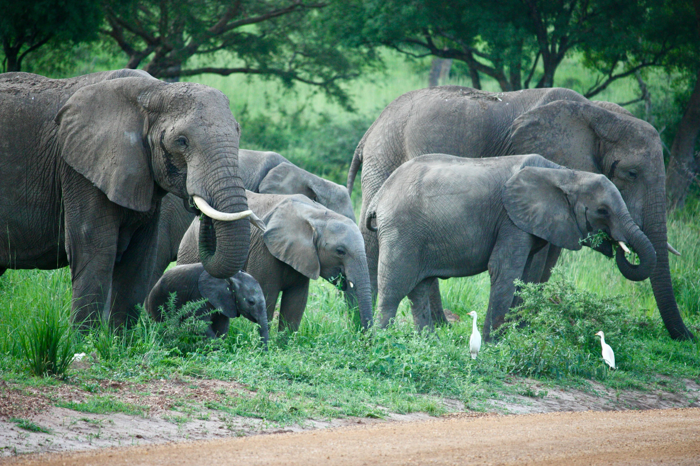

Asia's Premier Big Cat & Elephant Safari Destination
Small in size but huge in biodiversity, Sri Lanka is one of the world's best places to see leopards, massive elephant gatherings and endemic birds.
Guided jeep safaris are safe and led by expert trackers. Morning and afternoon sessions catch peak animal activity.